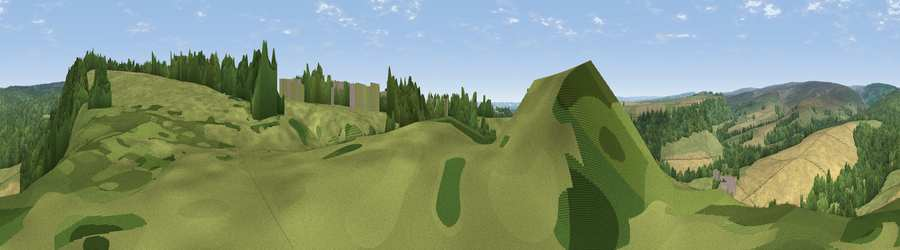

Viewpoint near Cropton
#22249 in England · top 53% of its area beats it · near Cropton · path 95 mWhere it is
The exact computed spot (SE 75475 89325). Click the marker for map links.
Public access: the nearest public right of way is about 95 m away — the final stretch may cross private land. Computed from Natural England's CRoW access layer and OpenStreetMap rights of way — not the legal definitive map. Always verify locally.
The view, rendered

A 360° render of this exact spot computed from the terrain model, tree cover and land cover — summer colours, afternoon light, calibrated against photographs of famous viewpoints. Real trees, hedges and buildings will differ in detail.
The panorama
Grey silhouette: terrain skyline in each direction (720 bearings, Earth curvature and refraction included). Dashed green: skyline with trees (+15 m) and buildings (+8 m) as obstacles. Blue strip: how far the ground is visible on each bearing.
Where the view opens
Wedge length = distance to the farthest visible ground on that bearing (vegetation-aware). Rings at 10, 25 and 50 km.
What fills the view
41% woodland · 40% grassland · 19% cropland ·
Angular shares of the visible panorama (visual magnitude), not map area. Landscape diversity 0.47 (0–1 Shannon).
Key numbers
More beautiful places nearby
The staircase of upgrades: each row has a higher view potential than everything closer. Driving times are estimates from straight-line distance, calibrated against real road routing — check an actual route before setting out.
| Place | Direction | Drive | Score |
|---|---|---|---|
| Viewpoint near Cropton | NE · 0 km | ~2 min | 61.5 |
| Ana Cross | NNW · 5 km | ~12 min | 65.9 |
| Viewpoint near Gillamoor | WNW · 9 km | ~17 min | 67.2 |
| Viewpoint near Gillamoor | W · 9 km | ~18 min | 72.8 |
| Flat Howe | NE · 18 km | ~32 min | 76.4 |
| Viewpoint near Ampleforth | WSW · 19 km | ~32 min | 76.6 |
| Viewpoint near Eskdaleside | NNE · 19 km | ~32 min | 78.4 |
| Viewpoint near Eskdaleside | NNE · 19 km | ~32 min | 80.7 |
54.29398, -0.84191 · source: screening · position refined by local search. Computed location — check access rights before visiting.